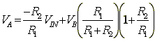
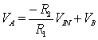

A Constant Current Source for a Grounded Load using a Single Op-Amp
| More Tutorials |
Figure 1 shows a modified Howland constant current source. The output current through the load is independent of the resistance of the load, and depends only on the input voltage, Vin. The voltage, VA, can be written as
|  | (1) |
using the equations for the gain of an op-amp at the negative, and the positive input terminals.
Figure 1. Constant current source.
Simplifying (1) yields
|  | (2) |
Rearranging so that VA and VB are on the same side of the equation yields
| (3) |
By Ohm’s law, IB is equal to
| (4) |
or
| (5) |
Substituting equation (3) into (5) yields
| (6) |
If R2 if much greater than RX, then IB can be assumed to flow through the load. Typically RX will be 1-100 ohms, and R2 will be on the order of 10K to 100K. The capacitor, C1, provides a single dominate pole to the feedback circuit to prevent oscillators. Without a load, the positive feedback will equal the negative feedback when power if first applied to the circuit. Capacitor C2 insures that the positive feedback is less than the negative feedback when the power is first turned on. If the load is non-linear, it will essentially be an open circuit until the output voltage rises enough to cause it to start conducting.
Copyright 1999, Mike Ellis, All Rights Reserved
You are visitor number